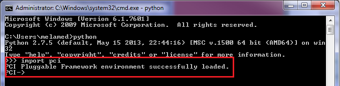
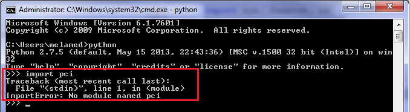

Geomatica Py General¶
This section provides some basic recipes for testing your installation, importing Geomatica’s Python library (modules), accessing help, error handling and etc.
Check Installation of Geomatica Py Libraries¶
Quickly check to ensure that Geomatica is correctly installed and licensed for your computer. Use Python’s interactive mode in the terminal/console for quickly checking the install and licensing.
import pciIf successful...
If failure...
Note: Depending on the error, a different error message may be printed
Import Geomatica Py Libraries¶
This example explicitly imports the pansharp2 function from the pansharp2 module and imports all onjects and functions from the ortho2 module
from pci.pansharp2 import pansharp2 #Imports the pansharp2 function/object from the pansharp2 module from pci.ortho2 import * #imports all of the functions and objects from the ortho2 module
Accessing Help About Geomatica Py Function¶
Python prints help documentation to the terminal/console for the specified function. This includes information about the signature of the function (arguments that need to be passed) and information about what the function does. Furthermore, the help document includes information about what input data is required and what output is produced.
It is best to access this directly with the python interpreter in Geomatica’s Focus or using a terminal/console
from pci.pansharp2 import pansharp2 help(pansharp2)
Handling Geomatica Py Exceptions¶
This example demonstrates how to handle exceptions that may result from incorrectly invoking a Geomatica function. The main behaviour of this action is that the script will continue to run if the exception is called. This is mainly desirable when performing batch operations, so that if one file fails to run, the script will continue to process the other files
from pci.pansharp2 import pansharp2 from pci.exceptions import PCIException import sys ms_file = r"c:\NewYorkk_multispectral.pix" #this file is incorrectly spelt and thus, does not exist ms_channels = [1,2,3,4] #pansharpen channels 1 to 4 (Red, green, blue and NIR) pan_file = r"c:\NewYork_panchromatic.pix" out_file = r"c:\NewYork_pansharpened.pix" try: pansharp2(ms_file, ms_channels, [], pan_file, [], out_file, [], "", [], "", "pix", "tiled512") except PCIException, e: print e except Exception, e: print eThis results in python printing a PCI caught exception that the input multispectral file does not exist The script will continue to run through to the next line of code without exiting, because the exception is handled with a print statement

Input Methods¶
This recipe demonstrates three (3) different methods that users running a script can input information, such as, locations to input files.
#Method 1 - In the script directly input_file = r"c:\raw_imagery\image.tif" #Method 2 - With a user prompt input_file = raw_input("Please provide the path to the input image ") '''The script will pause until the user provides an input path. At which point, the variable "input_file" will be assigned the user provided path.''' #Method 3 - Passing information s arguments when launching the script (usually the preferred method) from sys import argv script, input_image, output_dir = argv print "input image is: " + input_image print "output directory is: " + output_dir '''The user running the script will be expected to provide the path to the input file and output directory after providing the location of the script. Each argument is separated by a white space" For example: python c:\python_script\myscript.py c:\raw_imagery\image.tif" '''